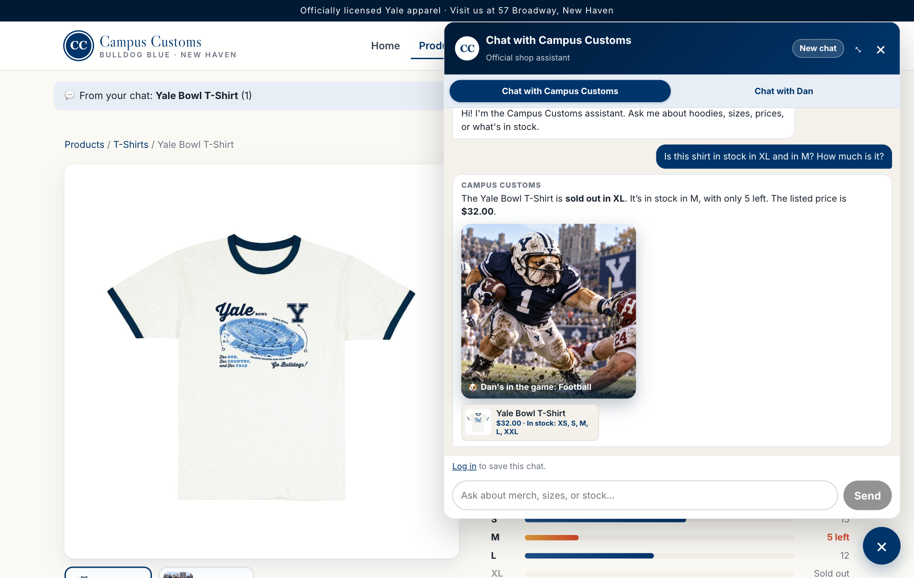
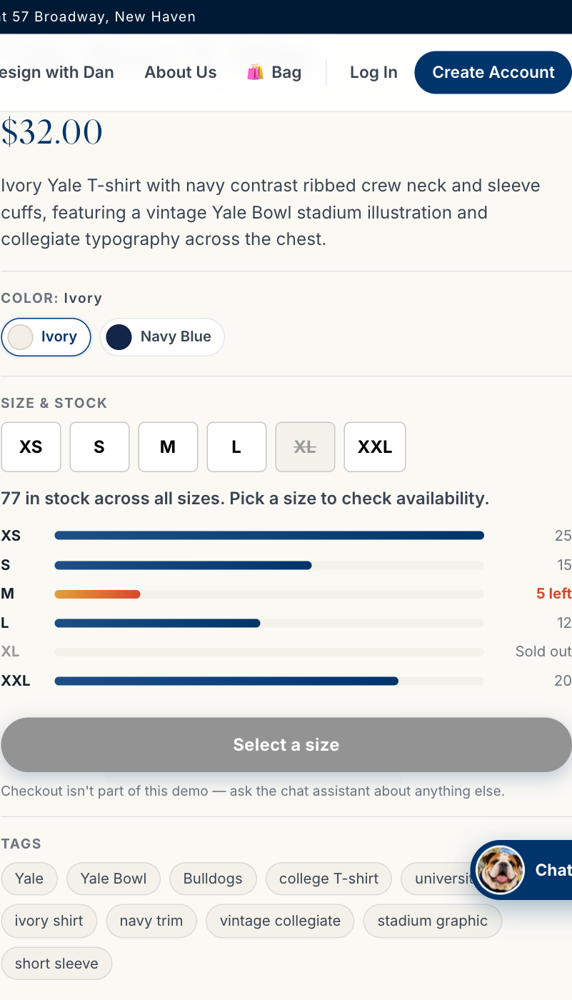
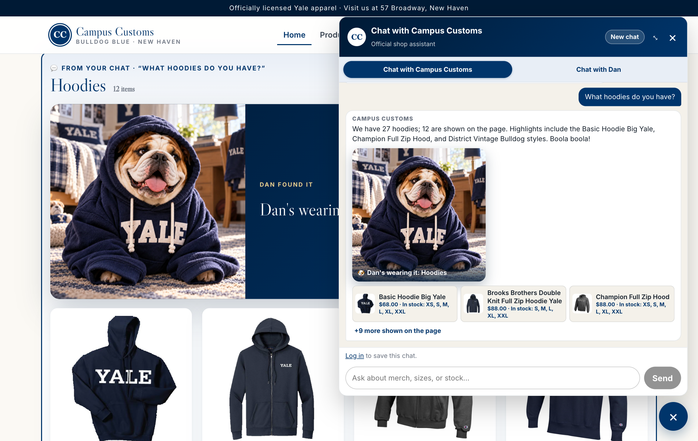
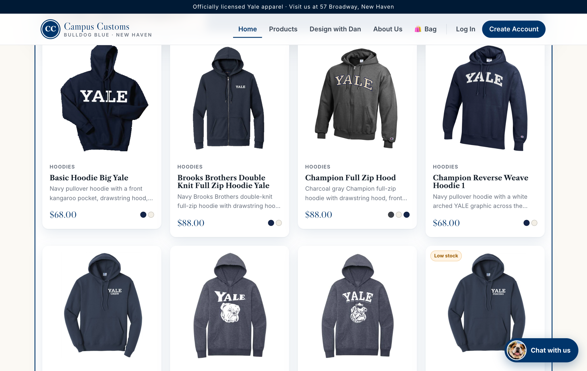
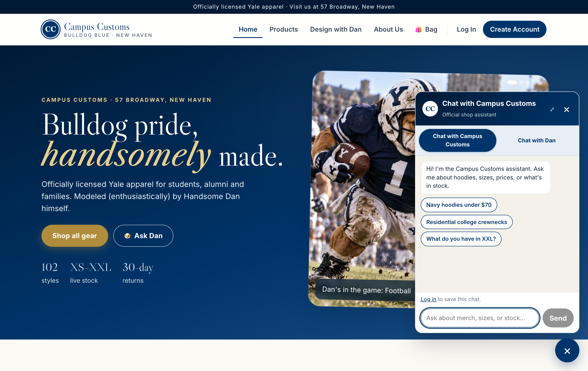
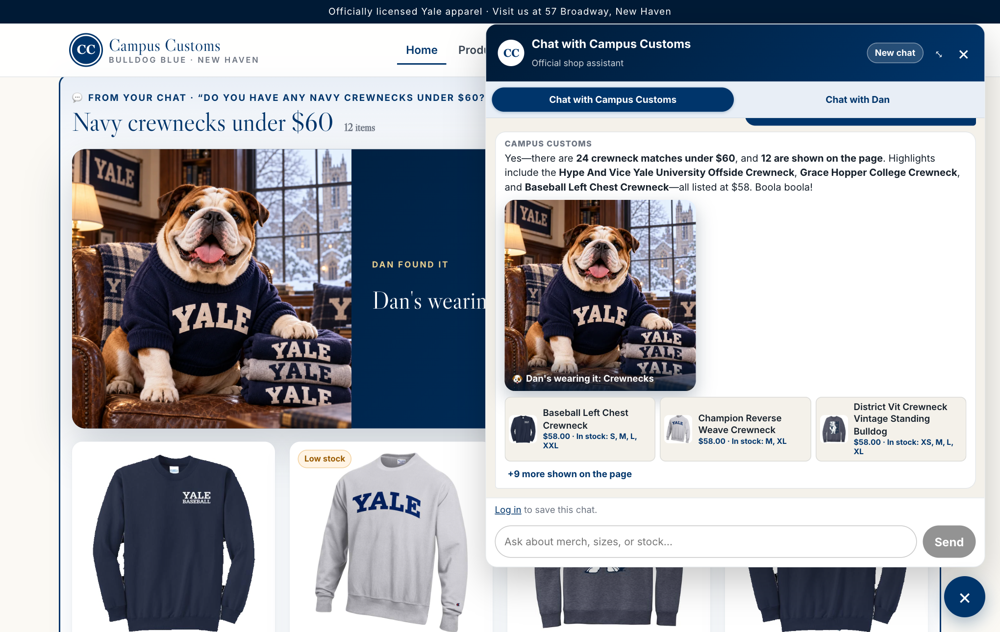
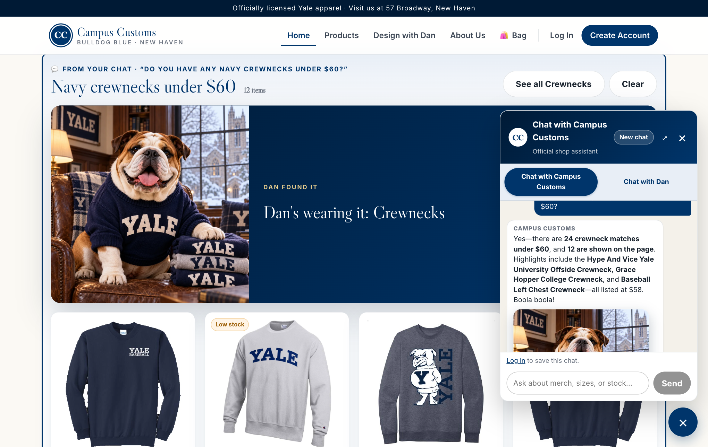

Campus Customs: App Check (Problem 11)
- 1. Inventory in chat PASSStock and price match the database exactly.
- 2. Search-results cards PASS"What hoodies do you have?" puts 12 cards on the page.
- 3. Usability (Problem 9) PASSChat expands to fit a reply and shrinks on an outside click.
Check 1: Chat checks an item's inventory level (honest stock and price from the DB)
On the Yale Bowl T-Shirt page, the shopper asked: Is this shirt in stock in XL and in M? How much is it?
Database values for yale-bowl-t-shirt (campus_customs.db, tables catalogue + inventory):
| Price | XS | S | M | L | XL | XXL |
|---|---|---|---|---|---|---|
| $32.00 | 25 | 15 | 5 | 12 | 0 | 20 |

check_stock tool instead of guessing.
Check 2: Dynamic search-results cards appear after a category question
On the home page, the shopper asked: What hoodies do you have?


Check 3: Usability feature from Problem 9 (expandable chat window)
Problem 9, front-end improvement 1: the chat opens small, grows when a reply needs room, and shrinks back (staying open) when the shopper clicks back on the page. Test question: Do you have any navy crewnecks under $60?



Update after submission (Oct 20, 2026): these screenshots were taken at submission, when the chat grew to about half the page. After using the live store, the owner capped it at ¼ of the window so less of the page is covered. It still auto-expands, shrinks on an outside click, and has the ⤢ / ⤡ button. This was re-verified by the automated site test (scripts/site_test.py, 118 of 118 checks).
Issues found and fixed during testing
- Chat didn't auto-expand (fixed). The first run of Check 3 failed. The overflow check ran before the reply's images (Dan reveal, thumbnails) had loaded, so the reply only overflowed after the check.
ChatWidgetnow re-checks as those images load, for a few seconds after each new reply. - Count mismatch (fixed). One reply said "12 shown on the page" while 11 cards appeared, because the agent listed only 11 of its 12 results. The prompt now requires the "on the page" number to equal the cards actually returned. 3 out of 3 re-runs said 12 and showed 12.
Notice: This is not a real retail site. It is not affiliated with Campus Customs. It was created by Dr_BMo for Yale School of Management's class MGT 409E — AI Foundations for Managers.